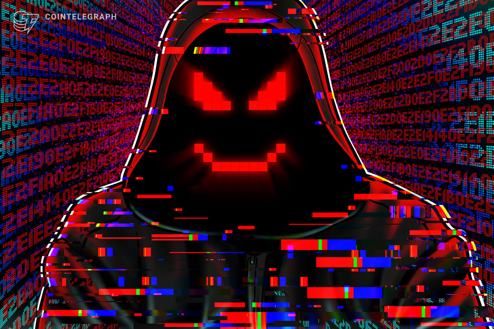

Los tipos de malware más comunes son:
-Virus
-Gusano
-Troya
¿Qué es el ransomware y cómo evitarlo?
-Spyware
-Adware
-Botnet
Cómo prevenir el malware
El phishing sigue siendo la forma más fácil para los hackers de instalar malware en un dispositivo. MetaPhish proporciona a los clientes una poderosa defensa contra los ataques de phishing mediante la formación de los empleados para identificar y responder adecuadamente a estas amenazas. El software contiene una biblioteca de experiencias de aprendizaje inteligentes como infografías, avisos y vídeos de formación y, a diferencia de otras soluciones de phishing, el software permite al usuario comunicarse con el administrador.
Muchas personas han escuchado hablar acerca del hackeo, incluso han sido víctimas de este ciberataque, pero es muy probable que no tengan información suficiente para entender todo lo que engloba y cómo pueden protegerse de los hackers.
El hackeo, se basa en penetrar sistemas informáticos para obtener información o realizar acciones maliciosas, sin embargo, a pesar que tiene una connotación negativa existe el hacking ético, que busca mejorar la seguridad informática. En este post encontrarás todo lo que debes saber del hackeo.
Es un proceso que consiste en obtener acceso a sistemas informáticos, cuentas personales, dispositivos digitales o redes de ordenadores. Para lograrlo, los hackers usan diferentes técnicas como aprovecharse de la vulnerabilidad en el software, el uso de contraseñas débiles y la ingeniería social para obtener información confidencial.
No es posible evitar por completo que datos personales y sensibles caigan en manos de los ciberdelincuentes. En caso de fuga de datos debido a un ataque de piratas informáticos, a menudo lo único que queda por hacer es cambiar las contraseñas afectadas lo más rápido posible. Sin embargo, existen una serie de medidas que puede implementar de antemano para proteger sus datos de ataques de phishing y otras estafas.
Transmitir la menor cantidad de datos posible y considerar siempre qué información confidencial es realmente necesaria al utilizar un servicio on line. Ante la duda, sospechar.
No caer en mensajes de phishing o smishing, que intentan que revelemos datos personales por correo electrónico o mensaje de texto. Utilizando todo tipo de trucos, como enviar plazos ficticios o amenazas para bloquear la cuenta, los estafadores buscan atraernos a sitios web donde pueden robar datos confidenciales, como información de contacto, números de tarjetas de crédito o contraseñas.